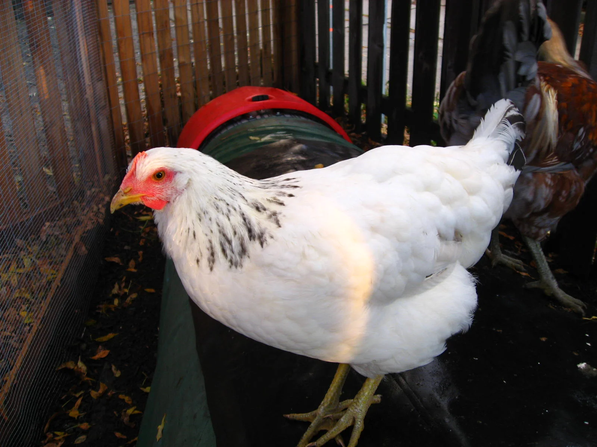
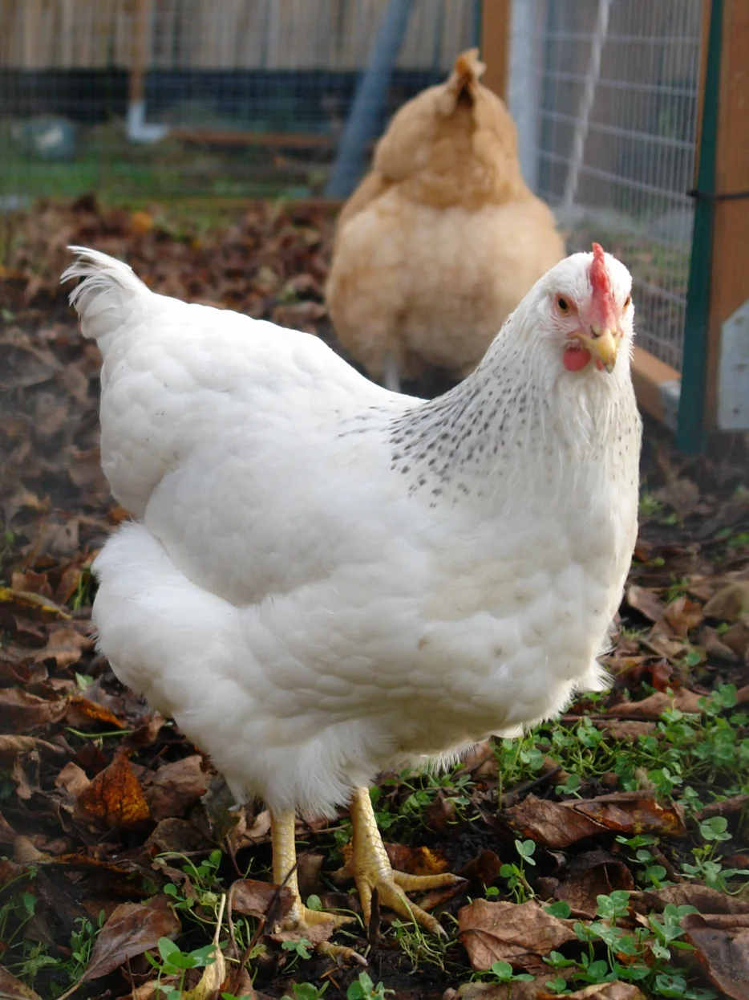

Delaware: la blanca americana

La Delaware es una raza americana creada en 1940 por George Ellis, un avicultor del estado de Delaware (Estados Unidos), a partir de cruces de Barred Plymouth Rock y New Hampshire. Ellis buscaba un pollo de carne de crecimiento rápido y plumaje blanco, y de uno de esos cruces salieron aves blancas con el cuello y la cola barrados en negro: la raza Delaware. Fue una de las razas de carne más importantes de Estados Unidos en los años cuarenta y cincuenta, antes de que el broiler industrial la desplazara, y hoy está en la lista de vigilancia de la Livestock Conservancy (en recuperación), mantenida por criadores aficionados que valoran su doble aptitud y su carácter.
Origen e historia
La Delaware es una raza americana creada en 1940 por George Ellis, un avicultor del estado de Delaware (Estados Unidos), a partir de cruces de Barred Plymouth Rock y New Hampshire. Ellis buscaba un pollo de carne de crecimiento rápido y plumaje blanco, y de uno de esos cruces salieron aves blancas con el cuello y la cola barrados en negro: la raza Delaware. Fue una de las razas de carne más importantes de Estados Unidos en los años cuarenta y cincuenta, antes de que el broiler industrial la desplazara, y hoy está en la lista de vigilancia de la Livestock Conservancy (en recuperación), mantenida por criadores aficionados que valoran su doble aptitud y su carácter.
Características físicas
La gallina: ave grande, de unos 3 kg, de cuerpo ancho y redondeado, con el pecho prominente y la cola de tamaño medio. Su plumaje es blanco con la esclavina (el cuello) y la cola barradas en negro, un dibujo muy característico: de lejos parece una gallina blanca, y de cerca se ve el barrado negro del cuello y las plumas de la cola. Su cresta es sencilla, de tamaño mediano, con cinco puntas, y las orejillas son rojas. Las patas son amarillas, limpias y fuertes.
El gallo: mayor, de unos 3,9 kg, con el mismo dibujo blanco y barrado, pero con el barrado más marcado en la esclavina, el manto y la cola, y las hoces largas y barradas. Su cresta sencilla es grande y roja, y su porte es erguido y seguro. Es un gallo blanco imponente, fácil de distinguir de un Leghorn blanco por el barrado negro del cuello.
Variedades de plumaje
La raza tiene una única variedad reconocida: la blanca barrada descrita arriba. No hay variedades de color separadas; la selección se centra en la pureza del blanco y en la intensidad y la regularidad del barrado negro del cuello y la cola.
Puesta
Es una buena ponedora para una raza de doble aptitud: en torno a 200–280 huevos al año (unos 4 por semana), de color marrón y tamaño grande. Pone con regularidad y mantiene la puesta en invierno mejor que la mayoría de las razas pesadas. No es muy clueca, lo que favorece la puesta continua.
Carácter
Es una de las razas más dóciles y tranquilas de este catálogo: la gallina Delaware es mansa, confiada y se deja coger sin problemas, y el gallo es protector pero rara vez agresivo. Es una raza ideal para granjas familiares y para quien empieza, y convive bien con otras razas y con niños. Es activa pero no nerviosa, y no vuela mucho.
Cuidados, alimentación y alojamiento
Es una raza grande y rústica, hecha para el clima continental americano: soporta bien el frío (su cresta sencilla mediana es menos sensible a las heladas que las crestas grandes) y el calor moderado con sombra y agua fresca. Necesita un gallinero amplio y ventilado, con perchas fuertes y nidales amplios (uno por cada 4 gallinas), y un corral de 4–5 m² por ave para que pueda campear. Come pienso de puesta o de doble aptitud, grano y forraje; como es una raza pesada y buena ponedora, necesita un aporte constante de calcio (conchilla) para la cáscara de sus huevos grandes. Es una raza longeva y sana, sin problemas específicos de salud.
Para qué sirve
Doble aptitud: es el ejemplo clásico de raza de carne y huevo a la vez —pollo de crecimiento rápido y carne sabrosa, y ponedora de huevo marrón grande y constante. En una granja rentable es la raza «todoterreno»: huevos para vender cada semana y pollos para carne, con un carácter que facilita el manejo. También es una raza de conservación, y criar Delaware es ayudar a mantener una raza americana histórica.
Curiosidades
Nació por casualidad en un cruce buscando otra cosa, y su creador, George Ellis, le dio el nombre de su estado; fue la raza de carne dominante en Estados Unidos antes de la llegada del broiler industrial; su barrado negro en el cuello es la forma más fácil de distinguirla de otras gallinas blancas; y es la raza con peor cobertura fotográfica de este catálogo: de sus tres casillas, solo la de gallina está cubierta, y gracias a una foto nueva buscada para este trabajo.
Fotos de la raza

Gallo adulto y grupo pendientes: no hay ningún gallo Delaware adulto con licencia comercial en Wikimedia Commons ni en Flickr CC. La pista es la foto «Poultry» de Cowgirl Jules en Flickr (gallo Delaware verificado, «My Delaware rooster»), pero con licencia CC BY-NC 2.0 (no comercial): hay que pedirle permiso a la autora.
Fotos y licencias
Las fotos de esta ficha son fotografías reales con licencia libre de uso comercial. Las licencias CC BY 2.0 y CC BY-SA 2.0 exigen atribuir al autor; la CC BY-SA exige además compartir las adaptaciones bajo la misma licencia. Las fotos se publican en WebP a partir de los originales, con su autor y su licencia.
- Gallina adulta (foto principal): Linda N. (Linda, Chicago) — CC BY 2.0 (2008).
- Pollita (imagen secundaria de ave joven): Josh Larios — CC BY-SA 2.0 (15-11-2008).


Fuentes
Datos raciales contrastados con la información de la raza: Delaware (The Livestock Conservancy).
Prepara tu lote y tu gallinero
Antes de comprar aves, calcula el espacio que necesitas, lo que costará alimentarlas y cuándo tendrás los primeros huevos.
Comprueba la normativa local: algunas zonas exigen registrar las aves o avisar al ayuntamiento. Revisa las normas de tu municipio antes de criar.